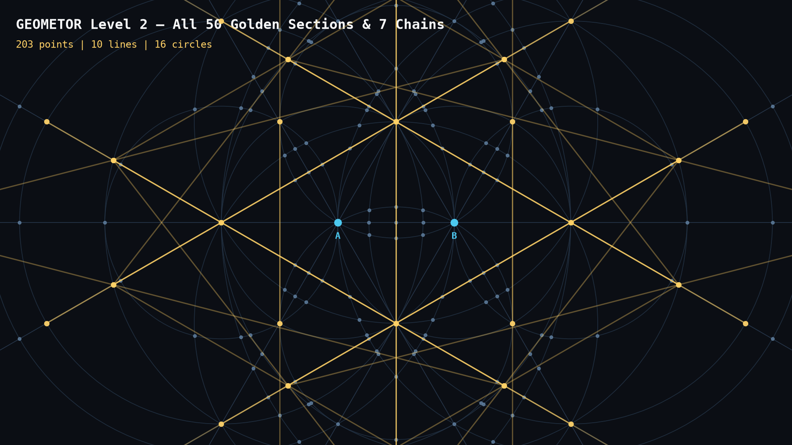
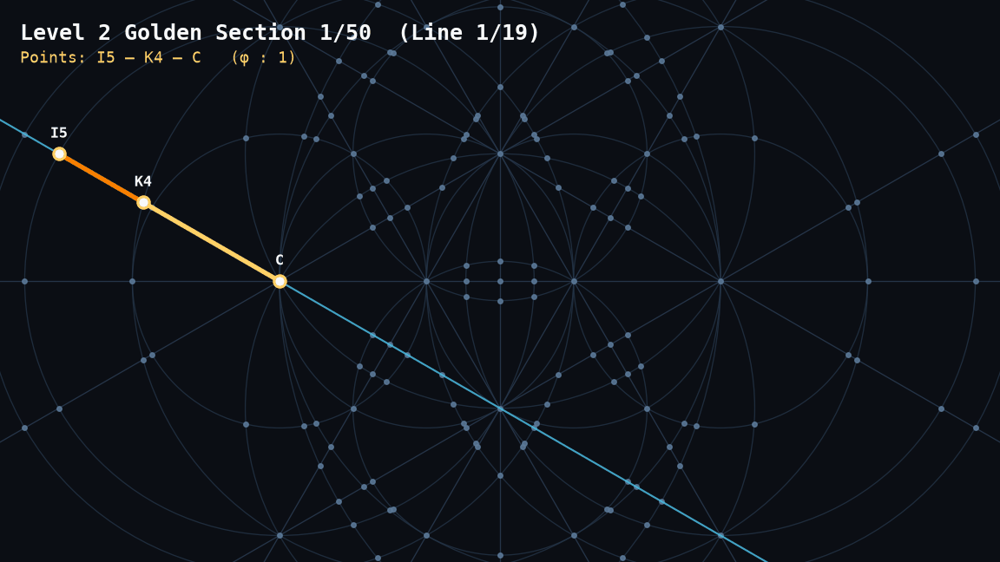
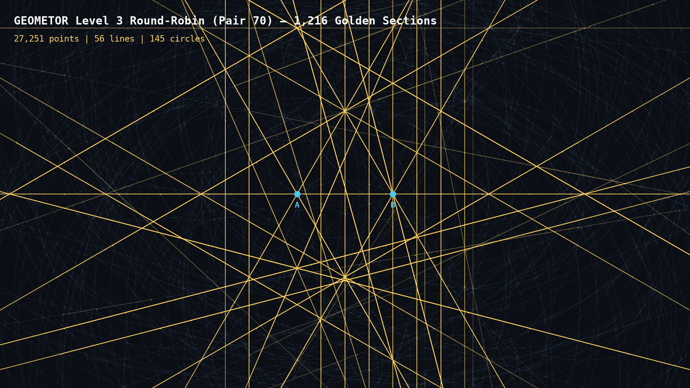
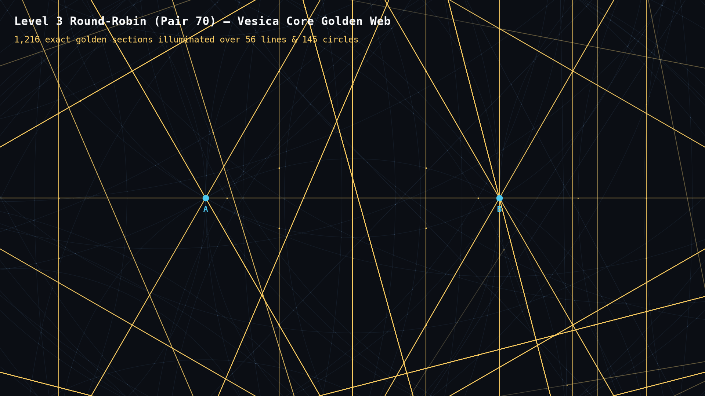
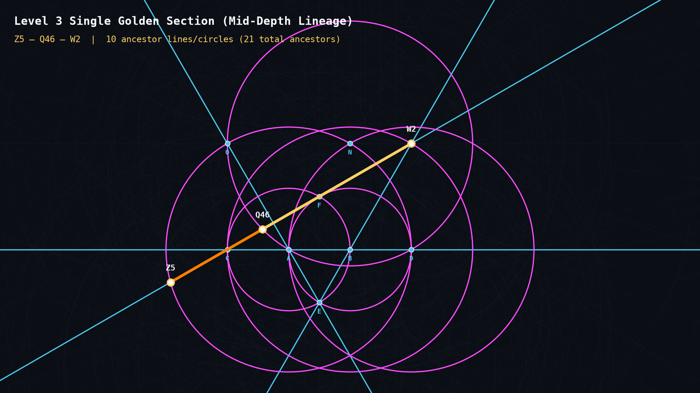
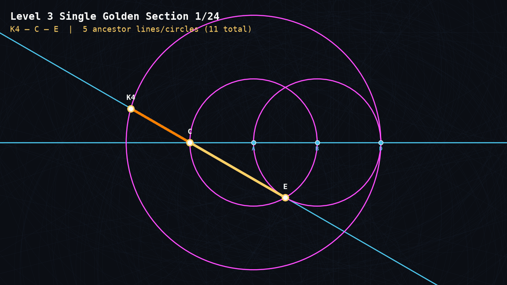

Approaches & Discoveries¶
Starting from two given points \(A = (-1/2, 0)\) and \(B = (1/2, 0)\), each Level applies the three fundamental Euclidean operations—one line \([P\,Q]\) and two circles \((P\,Q)\) and \((Q\,P)\)—to every unordered pair of points constructed so far, collecting all new exact symbolic intersections (see Levels for the formal hierarchy and interactive SVG explorers).
Totals Summary¶
Stage / Run |
Pairs |
Points |
Lines |
Circles |
Golden Sections |
Chains (Max) |
|---|---|---|---|---|---|---|
Level 0 (Given) |
— |
2 |
0 |
0 |
0 |
0 |
Level 1 (Full) |
1 |
6 |
1 |
2 |
0 |
0 |
Level 2 (Full) |
15 |
203 |
10 |
16 |
50 (34 explicit) |
7 (max 4) |
Level 3 (All Structures) |
20,503 |
~100M+ proj. |
17,562 |
32,719 |
— |
— |
L3 A-First (Pair 120) |
120 |
28,641 |
74 |
162 |
3,072 |
1,354 (max 17) |
L3 Round-Robin (Pair 70 / 75) |
70 / 75 |
27,251 / 31,294 |
56 / 60 |
145 / 155 |
1,216 / 1,293 |
up to 76 / line |
L3 Round-Robin (Pair 103 / 126) |
103 / 126 |
55,060 / 84,439 |
70 / 88 |
211 / 257 |
1,439 (45/70 lines) |
445 (max 10) |
L3 Full Lines (Lines 0–3) |
— |
31,627 / 58,650 |
— |
— |
— |
— |
Level 2: Spontaneous Golden Symmetry¶
At Level 2 (15 pairs from 6 Level-1 points), 50 exact golden sections and 7 golden chains (including 5 chains of 4 consecutive sections / 6 collinear points) emerge across 8 distinct scales with zero targeting of \(\varphi\).

All 50 exact golden sections and 7 chains across Level 2 (203 points, 10 lines, 16 circles).¶

Walking animation cycling through all 50 golden sections line-by-line, followed by the 7 golden chains.¶
Level 3: Traversal Strategies¶
Because \(\binom{203}{2} = 20{,}503\) pairs generate 17,562 unique lines and 32,719 unique circles (~2.37 billion pairwise intersection slots), the order in which pairs are traversed dramatically shapes early structure:
Sequential ``A``-First (
itertools.combinations) PairsAwith all 202 other points first (pairs 1–202), producing a dense radial starburst throughA. At pair 120 (0.585%), a single ray throughAalready hosts 9 branching length-17 golden chains (19 collinear points in consecutive \(\varphi\)-progression).Symmetric Radial Interleave (
order_pairs_symmetric) Orders pairs radially outward from the vesica center(0, 0), growing bothAandBtogether. By pair 76 it reaches 20,635 points—nearly double the early density ofA-first.Round-Robin Stride Interleave (
order_pairs_round_robin) Emits(P0, P1), (P1, P2), (P2, P3), ...across all 203 points, touching every Level-2 point within the first 203 pairs. At pair 70 it yields 27,251 points and 1,216 tracked golden sections (up to 76 sections on a single line); by pair 126 it reaches 84,439 points.

Round-Robin Pair 70 (27,251 points, 56 lines, 145 circles) with 1,216 exact golden sections illuminated.¶

Zoomed-in view of the symmetric golden web between \(A = (-1/2, 0)\) and \(B = (1/2, 0)\).¶
Direct-Parent Ancestor Isolation¶
To reveal the minimal compass-and-straightedge origin of each golden section \((P, Q, R)\), we isolate only the direct first-birth parents (the 3–6 lines and circles that intersect at \(P, Q, R\)) in solid cyan while dimming the surrounding Level-3 field.

Single Level-3 golden section N11 — F26 — H26 with its 5 direct parent lines and circles framed in cyan.¶

Cycle of 24 single Level-3 golden sections with their direct parent lines and full parent circles framed.¶
Algorithmic & Parallel Architecture¶
Exact :math:`O(1)` Point Deduplication (
geometor.modelv0.6.1): \(3 \times 3\) spatial grid hash (h = 1e-6) screens candidates withzero_testbefore runningclean_expr, preventing \(O(N^2)\) blowups.Fast Golden Search & Point-Birth Impact (
geometor.divinev0.4.5–v0.4.6):bisect_left1D projection search (\(O(n^2 \log n)\)) and incrementalGoldenFieldTracker(\(O(m \log m)\) per new point).Out-of-Core Parallel Level 3 (
geometor.levels.parallel_l3): 3D spatial grid dedup builds all 50,281 unique Level-3 structures in 111.5s (14.6× faster than linear dedup). Intersecting single full Level-3 lines against all 50,280 structures reveals 31,627 points online 0and 58,650 points each onlines 1–3.